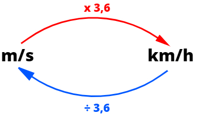
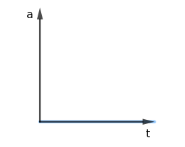
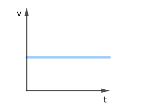
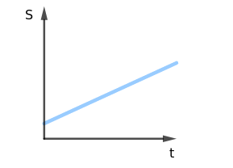

Aula1-4: Movimento retilíneo uniforme (MRU)
Dizemos que um corpo está em movimento sempre que, com o passar do tempo, ele muda de posição em relação a um referencial. O movimento é chamado de retilíneo quando essa mudança de posição acontece ao longo de uma única direção, isto é, sobre uma linha reta. Quando o movimento, além de retilíneo, ocorre com velocidade constante — o corpo percorre espaços iguais em intervalos de tempo iguais —, dizemos então que se trata de um movimento retilíneo uniforme (MRU).
Velocidade média
A velocidade média é a grandeza física que indica a rapidez com que o corpo percorre
os espaços. Ela é calculada pela razão entre o deslocamento do móvel
e o intervalo de tempo gasto para percorrê-lo
.
No Sistema Internacional de Unidades (SI), a velocidade é medida em “metros por segundo”. No dia a dia, porém, também é muito comum expressá-la em “quilômetros por hora”:
ou
Conversão entre as unidades de medida
Como mostra a relação acima, para converter de “metros por segundo” para “quilômetros por hora”, multiplicamos o valor por 3,6. Para o caminho inverso — de “quilômetros por hora” para “metros por segundo” —, dividimos por 3,6.

Equação horária do espaço
A equação horária do espaço é a equação que fornece a posição (espaço) ocupada pelo móvel em cada instante de tempo — ou seja, o “horário” em que o móvel passa por cada posição. Para deduzi-la, basta manipular algebricamente a equação da velocidade média apresentada anteriormente:
Gráficos do MRU
|
ACELERAÇÃO X TEMPO A aceleração mede a taxa de variação da velocidade em função do tempo. No MRU a velocidade é constante, ou seja, não muda; portanto, a aceleração é sempre nula (zero). Por isso este gráfico apresenta sempre uma reta horizontal sobre o valor zero da aceleração. |
VELOCIDADE X TEMPO Como a velocidade é constante, ela não se altera com o tempo. O gráfico é, então, uma reta horizontal que corta o eixo da velocidade no valor correspondente à velocidade do movimento. |
ESPAÇO X TEMPO O gráfico do espaço em função do tempo é caracterizado por uma reta oblíqua que corta o eixo do espaço no ponto correspondente à posição inicial do móvel. Se a reta é ascendente, o movimento tem velocidade positiva; se é decrescente, a velocidade é negativa. O grau de inclinação da reta é proporcional ao módulo da velocidade. |
||
|
 |
 |
 |